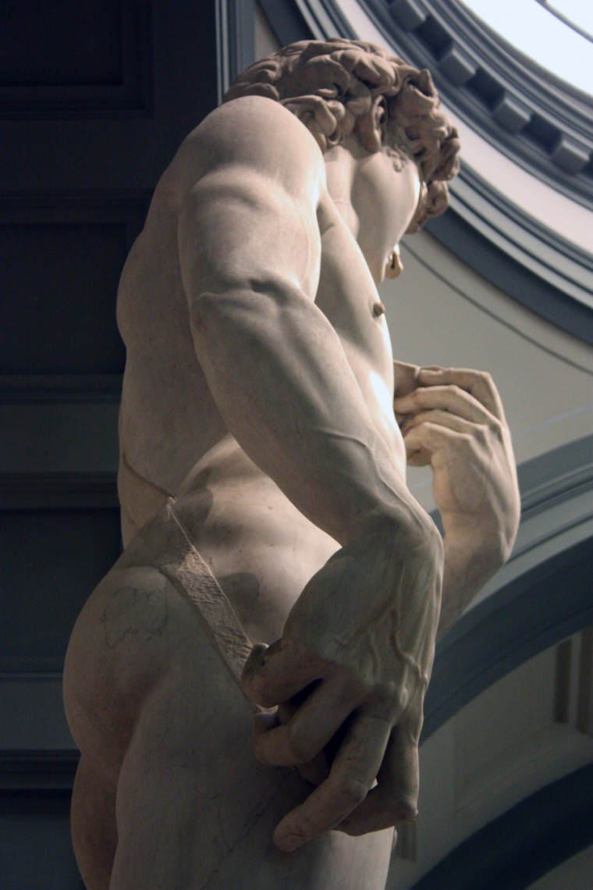
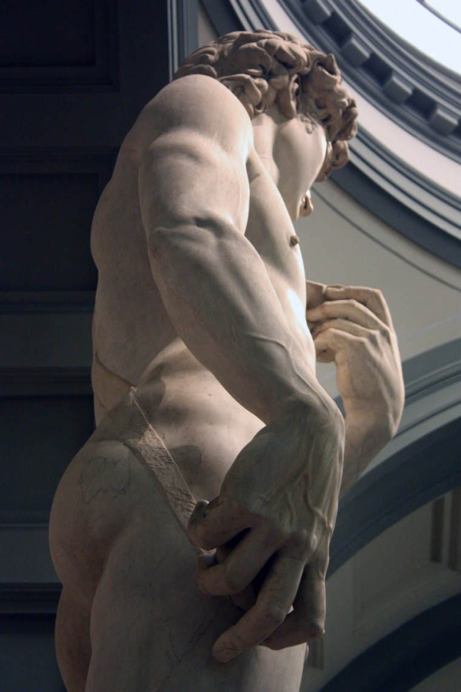

David (1501-1504)
David is a masterpiece of Renaissance sculpture created between 1501 and 1504, by the Italian artist Michelangelo. It is a 5.17-metre (17.0 ft) marble statue of a standing male nude. The statue represents the Biblical hero David, a favoured subject in the art of Florence. It is possible that the David was conceived as a political statue before Michelangelo began to work on it. Certainly David the giant-killer had long been seen as a political figure in Florence, and images of the Biblical hero already carried political implications there.

 
